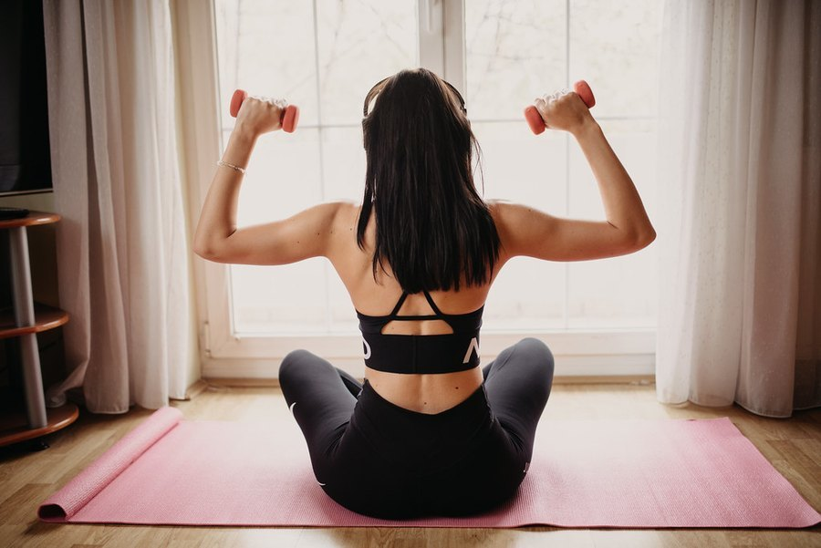

Hot Flashes: Causes and Natural Ways to Cope
Hot flashes hit without warning and rarely on a convenient schedule. Here's what actually causes them and which natural approaches have real evidence behind them.

Key takeaways
- Hot flashes come from a shrinking thermostat window in the brain, not from the room actually being hot. Falling estrogen narrows the range of body temperature your brain tolerates before it triggers a cooling response.
- Layered, breathable clothing and a cool sleep environment are simple, low-cost steps with genuinely good evidence for easing frequency and severity.
- Black cohosh and soy isoflavones have mixed, modest evidence at best; neither is a reliable fix, and quality varies a lot between products.
- CBT and paced breathing reduce how much hot flashes bother you, even in trials where the flashes themselves didn't become less frequent.
- Hormone therapy remains the most effective single treatment for moderate to severe hot flashes; natural approaches are reasonable first steps, not a universal substitute.
Hot flashes affect roughly three out of four women during the menopause transition, and natural relief is possible for a real share of them: cooling strategies, trigger management, certain mind-body practices and a short list of supplements with actual trial support. None of it works as fast as hormone therapy, and none of it works for everyone, but the evidence for a handful of approaches is solid enough to try before reaching for a prescription.
What follows is a practical look at why hot flashes happen, which natural remedies hold up under research, which are mostly marketing, and where the line sits for talking to a doctor instead.
What actually causes a hot flash?
A hot flash starts in the hypothalamus, the part of the brain that manages core body temperature. Estrogen helps keep that thermostat's comfortable range wide. As estrogen falls during perimenopause and menopause, the range narrows sharply, sometimes to less than half a degree. A tiny, normal fluctuation in core temperature that would never have registered before suddenly crosses the narrowed threshold, and the brain responds as if you're overheating: blood vessels near the skin dilate, you flush and sweat, and your heart rate can briefly climb.
That's why a hot flash can hit in an air-conditioned office or in the middle of a cold night. The room temperature was never really the trigger. Your internal thermostat's tolerance was.
Why do some women get hot flashes and others barely notice them?
Genetics play a role, and so does body composition; women with a higher body mass index tend to report more frequent, more intense hot flashes, possibly because fat tissue affects how heat is retained and released. Smokers also tend to have more frequent and longer-lasting hot flashes than non-smokers, one of several reasons clinicians bring up smoking cessation during this transition. Stress and anxiety don't cause hot flashes on their own, but they can lower the threshold at which one gets triggered, which is part of why a tense day often seems to bring on more flashes than a calm one.
Which natural remedies have real evidence behind them?
| Approach | Evidence strength | What it actually does |
|---|---|---|
| Cooling the environment and layered clothing | Strong, practical | Reduces how often small temperature shifts cross the narrowed threshold |
| Cognitive behavioral therapy (CBT) | Good, consistent | Lowers distress and disruption from flashes; may modestly reduce frequency |
| Paced, slow breathing | Moderate | Can blunt the intensity of a flash already underway |
| Black cohosh | Mixed, modest at best | Some trials show a small benefit over placebo; others show none |
| Soy isoflavones | Mixed, modest | Possible small reduction in frequency for some women; inconsistent across trials |
| Regular aerobic exercise | Mixed on flashes, clear on mood and sleep | Doesn't reliably reduce flash frequency, but improves overall symptom tolerance |
| Hypnosis (clinical, trained practitioner) | Promising, smaller studies | Several trials show meaningful reduction in frequency and severity |
Notice what isn't on this list with strong evidence: no single herb or supplement reliably eliminates hot flashes the way hormone therapy can. The strongest non-hormonal results come from behavioral approaches, cooling strategies, and in some trials, hypnosis, not from a bottle.
Does identifying and avoiding triggers help?
- Spicy food and hot drinks raise core temperature slightly, enough to tip some women into a flash.
- Alcohol, especially red wine dilates blood vessels and is one of the more consistently reported triggers.
- Caffeine late in the day can worsen night sweats specifically, on top of its effect on sleep.
- A warm bedroom is one of the most fixable triggers; a fan, lighter bedding, or a cooler thermostat setting at night helps a lot of women.
- Tight or synthetic clothing traps heat against the skin; breathable, layered fabric is easier to shed mid-flash.
Keeping a short log for two or three weeks, noting what you ate, drank, and wore before each flash, tends to reveal a personal pattern faster than guessing. Not every woman has the same triggers, and some have none that are obviously food- or clothing-related.
What about black cohosh, soy and other herbal supplements?
Black cohosh is the most studied herbal option, and the research is genuinely mixed: some trials find a modest reduction in hot flash frequency compared with placebo, others find no real difference. Quality and standardization vary a lot between brands, which may partly explain the inconsistent results. It's generally considered to carry a low risk of side effects for short-term use, though there have been isolated reports of liver effects, so it isn't a fit for anyone with existing liver disease.
Soy isoflavones work through a different mechanism, mimicking estrogen weakly at certain receptors. Some women, particularly those with a gut microbiome that converts soy isoflavones into a more active compound called equol, see a modest benefit. Others see none. Red clover, evening primrose oil and dong quai all have far thinner, less consistent evidence, and none should be assumed safe to combine with hormone-sensitive conditions or blood thinners without a doctor's input.
How does cognitive behavioral therapy help, if it doesn't stop the flashes?
This is one of the more counterintuitive, well-supported findings in this area. CBT for hot flashes doesn't always reduce how often a flash happens. What it reliably reduces is how much a flash disrupts sleep, mood and daily functioning, and in several trials, the reported frequency also dropped modestly alongside that. The mechanism seems to be partly about breaking the anticipatory anxiety cycle: expecting a flash, especially in public or at work, can itself raise stress hormones and make the next one more likely and more noticeable.
Paced breathing, done slowly during a flash rather than as a general relaxation practice, has smaller but real evidence for shortening how intense a given episode feels. Neither requires a prescription, and a short course of CBT is now recommended in several clinical guidelines as a legitimate first-line option, not an afterthought.
How does natural relief compare with hormone therapy?
Hormone therapy (estrogen, with progesterone for women who still have a uterus) remains the most effective treatment available, often reducing hot flash frequency by 75 percent or more. Natural and behavioral approaches, at their best, tend to produce a more modest reduction, somewhere in the range of 20 to 50 percent depending on the approach and the person. That gap matters for women with frequent, disruptive flashes, and it's one reason natural remedies are often framed as a reasonable first step rather than a guaranteed alternative.
Certain non-hormonal prescription medications, including specific SSRIs, SNRIs, gabapentin and a newer class of drugs that target the same brain pathway involved in temperature regulation, sit in between: not as effective as hormone therapy on average, but typically more effective than herbal supplements, with a different side-effect profile worth discussing with a doctor.
Are there risks to trying natural remedies for hot flashes?
Most of the low-risk options, cooling strategies, trigger avoidance, paced breathing and CBT, carry essentially no downside beyond the time involved. Herbal supplements are a different story: "natural" doesn't mean risk-free, and quality control on over-the-counter supplements is inconsistent. Anyone on blood thinners, with a history of hormone-sensitive cancer, or taking other medications should check with a doctor or pharmacist before adding black cohosh, soy isoflavone supplements, or similar products, since interactions and contraindications genuinely exist.
Supplement labeling is a separate concern worth knowing about. Studies that test the actual contents of commercial black cohosh products have sometimes found mismatches between what's on the label and what's in the capsule, including products adulterated with unrelated plant material. Choosing a brand that carries third-party testing, from an organization like USP or NSF, lowers that particular risk, though it doesn't change the underlying evidence about whether the ingredient itself works.
Do night sweats need a different approach than daytime hot flashes?
The underlying mechanism is the same, but night sweats carry an extra cost: broken sleep. Waking up drenched, then needing to change bedding or pajamas, fragments the deeper stages of sleep that the brain relies on to consolidate memory and regulate mood the next day. For that reason, cooling the bedroom specifically (a fan, a cooling mattress pad, moisture-wicking sheets, or simply a lower thermostat setting overnight) tends to deliver an outsized benefit compared with daytime cooling tactics, because it protects sleep quality on top of reducing the flash itself.
Keeping a glass of cold water at the bedside, and avoiding alcohol within a few hours of bed, are two of the simplest changes with a reasonable track record for reducing night-sweat frequency specifically. If night sweats are severe enough to disrupt sleep most nights, that's one of the clearer signals it's time to discuss prescription options with a doctor rather than continuing to manage it alone.
When should you see a doctor about hot flashes?
It's worth a visit any time hot flashes are disrupting sleep, work or daily life, even if they don't feel "severe" by some objective standard; disruption is the practical threshold that matters, not a specific number of episodes. It's also important to see a doctor if hot flashes start very suddenly alongside other new symptoms (rapid heartbeat, unexplained weight change, or anxiety that feels out of character), since a handful of other conditions, including thyroid disorders, can produce similar symptoms and deserve their own evaluation.
A doctor can also help weigh hormone therapy against the non-hormonal prescription options for women where natural approaches aren't providing enough relief, factoring in personal and family health history that changes which option makes sense. Our guide to perimenopause's early signs covers what tends to come before hot flashes start, and how the transition is typically diagnosed.
Can hot flashes affect focus and memory too?
Many women report brain fog alongside hot flashes during this transition, and the two are connected: night sweats disrupt sleep, and poor sleep is one of the most reliable causes of daytime fogginess and memory lapses at any age. Falling, fluctuating estrogen also has its own direct effects on areas of the brain involved in memory, independent of sleep. Our breakdown of menopause and memory looks at that overlap in more depth, including what tends to improve once hormones stabilize after menopause. For the broader picture of hormone-related cognitive changes, see our guide to Women's Health.
Frequently asked questions
How many years do hot flashes typically last?
The average is around 7 years, though some women have them for a much shorter window and others continue having them for more than a decade. Frequency and intensity usually taper gradually rather than stopping abruptly.
Can hot flashes start before periods become irregular?
Yes, though it's less common. Most women notice cycle changes first, with hot flashes arriving later in the transition, but a smaller group experiences vasomotor symptoms earlier.
Do all women going through menopause get hot flashes?
No. Estimates suggest roughly 75 percent of women experience some degree of hot flashes or night sweats, which means a meaningful share go through this transition with few or none.
Can men experience hot flashes?
Yes, though it's less common and usually tied to a specific cause, most often androgen deprivation therapy for prostate cancer or another condition that sharply lowers testosterone.
Does losing weight reduce hot flashes?
For some women, yes. Higher body fat is associated with more frequent and intense hot flashes in several studies, and modest weight loss has been linked to improvement, though it isn't a guaranteed fix for everyone.
Can antidepressants help hot flashes even without depression?
Yes. Certain SSRIs and SNRIs are prescribed off-label specifically for hot flashes at doses that don't necessarily treat depression, and this is a recognized, evidence-backed option for women who can't or don't want to use hormone therapy.
Is hormone therapy safe for most women dealing with hot flashes?
For many healthy women within about 10 years of menopause onset, current guidelines consider hormone therapy a reasonable option with a favorable risk-benefit profile. It isn't right for everyone, particularly those with certain cancer or clotting histories, which is exactly why this decision belongs in a conversation with a doctor.
Related: Perimenopause symptoms: the early signs · Menopause and memory · Hormone replacement therapy and memory
Image: nenadstojkovicart / Openverse (Flickr) / CC BY 2.0